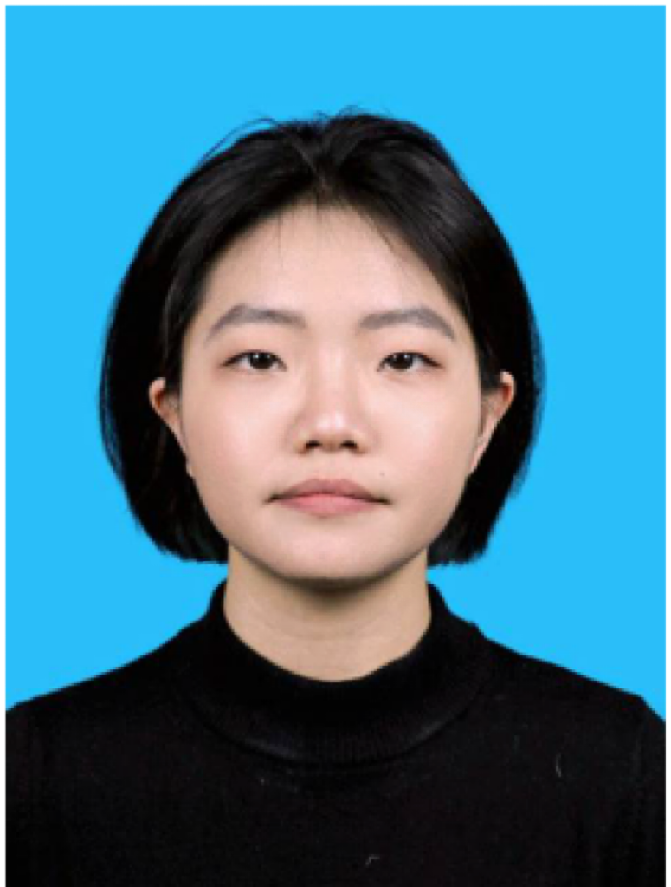

 |
博士研究生（预计2027年毕业） |
2023年09月至今 华北电力大学 人工智能
2020年09月-2023年07月 太原师范学院 计算机技术/智能数据分析与应用 GPA: 3.93
2016年09月-2020年07月 中北大学 软件工程/云计算与大数据分析 GPA: 3.86
现研究方向: 无人机巡检，目标检测，迁移学习，具身智能感知
证书: 软件设计师，CET-6，计算机二&三&四级，ACCA初级认证，CODA初级认证
Hierarchical Feature Difference-guided
Network for domain adaptation object detection
Jiaji Liu, Runhai Jiao*, Xinxin Li, Yutong Su
Journal of Visual Communication and Image Representation, 2026: 104851.(SCI三区)
A multi-view feature collaborative
optimization method for object detection
Jiaji Liu, Runhai Jiao*, Xiangning Zhan, Kaihang Li
Image and Vision Computing, 2026: 106023.(SCI三区)
YOLO-DTAD: Dynamic Task Alignment
Detection Model for Multi-Category Power Defects Image
Runhai Jiao, Jiaji Liu, Kaihang Li, Ruojiao Qiao, Yanzhi Liu, Wenbiao Zhang*
IEEE Transactions on Instrumentation & Measurement, 2025, 74: 1-14.(SCI二区)
SC-Net: 用于重叠染色体分割的上下文信息跳跃连接网络
焦润海*, 褚佳杰, 刘嘉骥, 余济民
中国图象图形学报, 2024, 29(09): 2806-2824.(中文核心)
Human skeleton behavior recognition model
based on multi-object pose estimation with spatiotemporal semantics
Jiaji Liu, Xiaofang Mu*, Zhenyu liu, Hao Li
Machine Vision and Applications, 2023, 34(3): 44. (SCI四区)
A dual-network micro-expression
recognition model based on optical flow feature
Xiaofang Mu*, Jiaji Liu, Zhenyu liu, Hao Li
2022 8th International Conference on Big Data Computing and Communications. IEEE, 2022: 199-205.(EI)
DC3D: A Video Action Recognition Network
Based on Dense Connection
Xiaofang Mu*, Zhenyu Liu, Jiaji Liu, Hao Li, Yue Li, Yikun Li
2022 Tenth International Conference on Advanced Cloud and Big Data. IEEE, 2022: 133-138.(EI)
跨域环境下特定多目标跟踪算法的改进
穆晓芳*, 李毫, 刘嘉骥, 刘振宇, 李越
太原理工大学学报, 2025, 56 (01): 165-173.(中文核心)
参与， 面向高压开关柜火灾应急处置的具身智能机器人研制 (SGJLCC00KJJS2504167)，
国网吉林省电力有限公司科技项目资助， 2026年01月-2026年12月
负责项目整体协调、任务统筹与技术路线规划，参与项目方案设计及团队协作管理；
基于成熟机器人平台开展二次开发，开展SLAM、多源感知、多模态识别、VLA、VLN等关键技术调研与工程验证；
支撑项目成果凝练，参与论文、专利、软件著作权等成果材料整理与撰写。
参与， 基于人工智能技术的数字采购关键文档智能校核及审查模型方法研究项目技术服务 (0900002024030301CC00024)，
深圳供电局有限公司， 2024年07月-2025年08月
负责项目过程管理与技术支撑，包括项目方案编制、投标材料准备、技术合同登记及过程文档管理；
参与项目需求分析、技术路线整理与交付材料编写，保障项目立项、实施及验收流程推进。
主持， 基于微表情识别的教学质量评估 (2021Y719)，
2021年度山西省级研究生教育创新项目， 2021年05月-2022年06月
该项目基于深度学习进行微表情识别，重构基于Deep CNN和Improved
FlowNet2的双网络模型，预测分析视频流的受试者微表情，提高教学质量评估效率，形成论文、专利和软著。
参与， 基于工地监控视频的智慧管理关键技术研究， 2023年度山西省基础研究计划(面上项目)
2022年12月-2023年06月
负责项目攥写和算法设计，主要基于深度学习算法，通过分析建筑工地的施工围挡、物料堆放、
垃圾苫盖、密闭运输等日常施工行为，辅助工地建筑的智能化监测。
一种面向监控视频流的智慧课堂分析方法及平台，202310463214.1，2024.04.16 (实质审查阶段)
面向无人机数据的电力缺陷检测系统V1.0，2024SR2231926，原始取得，全部权利，2024.12.30
面向监控视频流的智慧课堂分析系统v1.0，2023SR0527603，原始取得，全部权利，2023.05.09
算法岗， “智慧学情”分析， 中国科大-德清阿尔法创新研究院， 2021年11月-2022年05月
负责课堂监控监控视频处理、姿态估计算法设计和模型训练，主要基于深度学习算法，
定义并分析学生课堂的学习行为与非学习行为，提高教学质量。
团队赛， 《画家》高校学生智慧画像，
"2021年中国高校计算机大赛-网络技术挑战赛"西北赛区二等奖， 2021年06月-2021年07月
负责资料收集和平台搭建，主要基于现平台系统登录获取的人脸信息及采集的学生在校行为数据，
综合评价与刻画学生的个人画像，使学生自己与老师对其达到充分了解。
团队赛， 智能遛狗检测预警系统， "第十七届挑战杯学术科技作品大赛"校赛二等奖，
2021年03月-2021年05月
负责数据处理、目标检测模型设计与实验验证，主要基于轻量级目标检测模型，
预警提示监控视频中的未拴绳遛狗行为，形成系统原型。
2024-2025学年博士研究生奖学金 (2025.10.23)
2023-2024学年博士研究生奖学金 (2024.10.09)
2022-2023学年博士研究生奖学金 (2023.10.14)
2022年硕士研究生国家奖学金 (2022.10.18)
2022-2023学年一等奖学金 (2022.10.18)
2021-2022学年三等奖学金 (2022.05.26)
2020-2021学年平均奖学金 (2021.06.04)
2021年度优秀研究生干部 (2022.05.26)
2020年度优秀研究生 (2021.06.24)
2020届优秀毕业生 (2020.05.15)
2019年度校级优秀学生干部 (2019.11.20)
2018年度校级三好学生 (2018.12.01)
2017年度校级优秀团干 (2018.05.04)
2016年度校级优秀团干 (2017.05.04)
熟悉深度学习目标检测、领域自适应、多模态感知等算法，具备模型训练和优化能力。
具备科研项目管理、技术方案编制、项目材料整理及成果凝练能力。